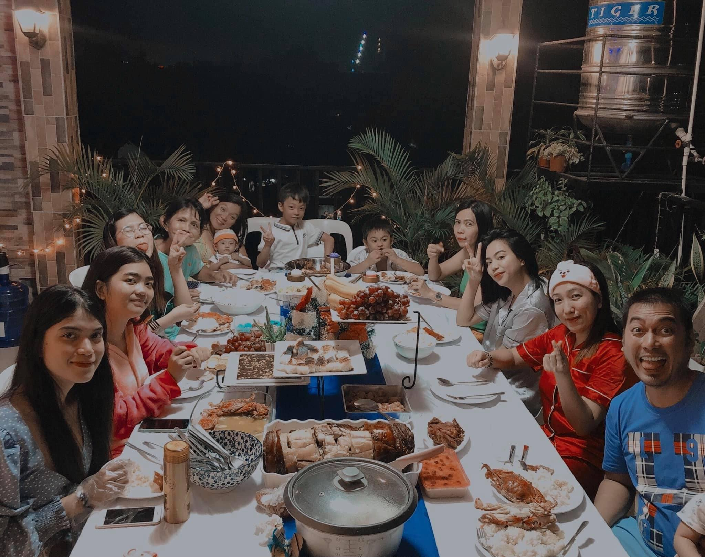
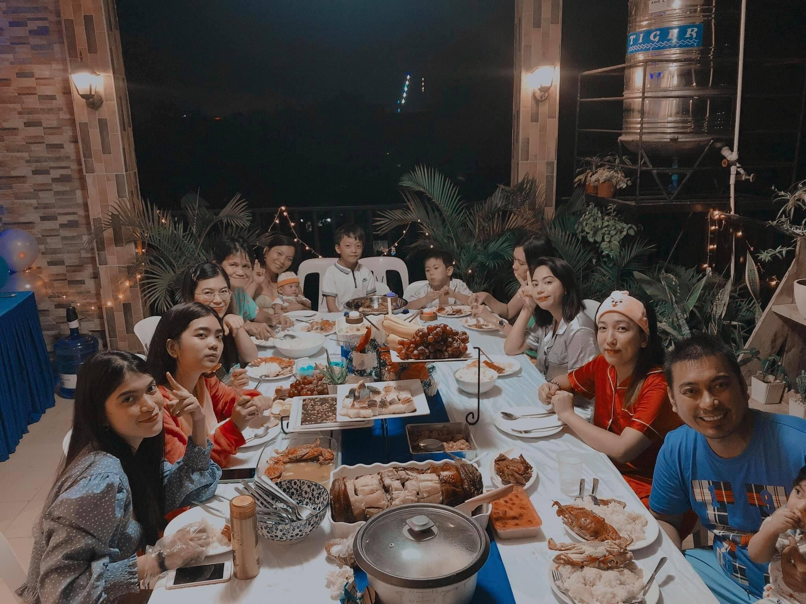

About Me
I’m Olive, from Cebu City, Philippines, currently in my second year as an Information Technology student at Cebu Technological University. Born under the Scorpio sign, my personality type is ISTP-T, which reflects my practical problem-solving nature and independent thinking. I’m passionate about personal growth and success, living by the motto 'it is what it is.' My inspirations include my mother, inner peace, and dreams of flying high. Singing is a joy of mine, though dancing isn’t quite my forte. I enjoy my solitude and often find myself lost in a good book during my free time—it’s how I unwind and relax.
Here is a picture of my family taken in 2022. We gathered together for a special occasion, and it captures a beautiful moment filled with love and joy. Everyone is smiling, showcasing our close bond and the happiness we share. This photo holds a special place in my heart, as it represents not only our family ties but also the cherished memories we created that year.


Education
I graduated from Maguikay Elementary School with high honors, an achievement that reflected my dedication to academics early on. During my elementary years, I was also selected to represent my school in the MTAP (Mathematics Teachers Association of the Philippines) competitions, which was a challenging but rewarding experience that honed my love for problem-solving.
For both high school and senior high school, I attended Saint Louis College Cebu, where I dedicated myself to achieving academic excellence. I chose the Accountancy, Business, and Management (ABM) strand, as I initially intended to pursue a Bachelor of Science in Accountancy (BSA) in college. However, as I explored my interests further, I discovered my passion for Information Technology, leading me to change my focus.
I was proud to receive a merit award during my graduation, which serves as a testament to the hard work and commitment I invested in my studies. This recognition not only highlighted my academic achievements but also motivated me to continue striving for success in my educational journey.
Now, I am currently pursuing a Bachelor of Science in Information Technology (BSIT) at Cebu Technological University, where I am in my second year of college. This journey in IT is both exciting and demanding, as I continue to learn and grow, preparing myself for a future career in the tech industry.

 Java
Java
 HTML
HTML
 CSS
CSS
 C Programming
C Programming
 SQL
SQL